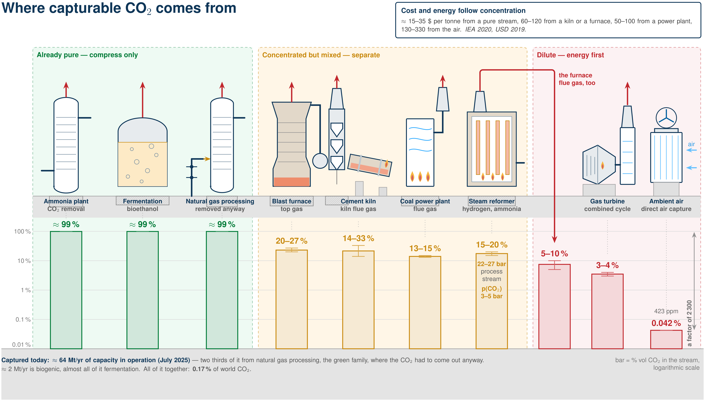
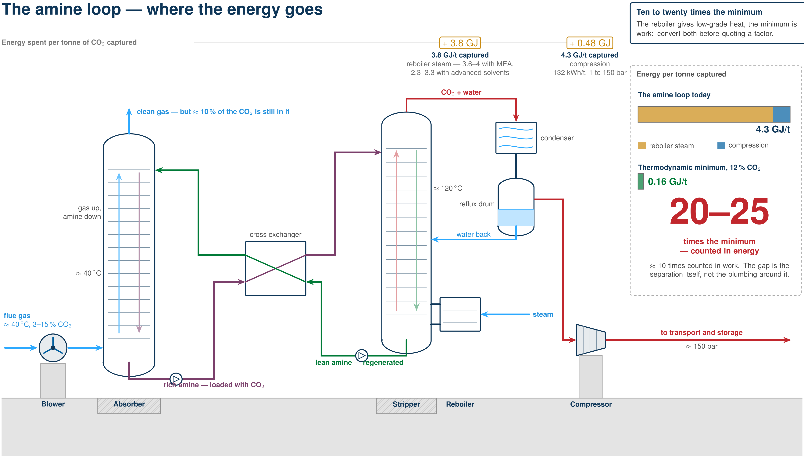
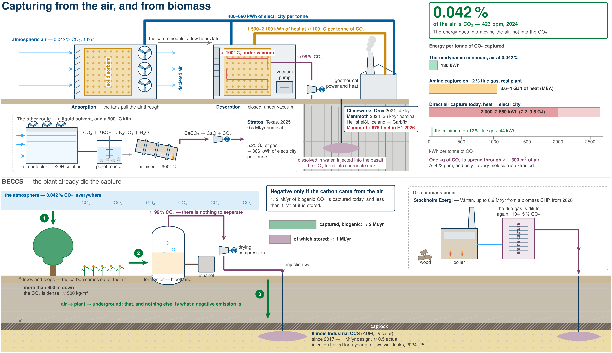
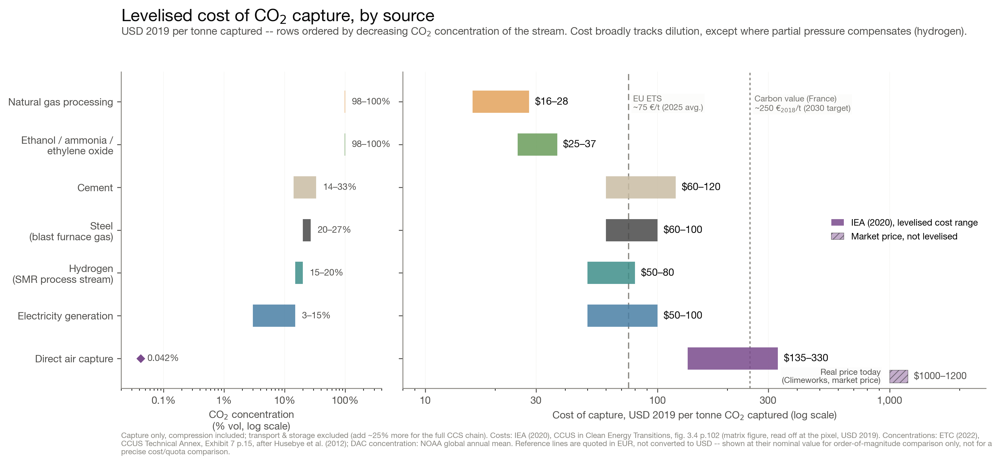

Capter le CO₂ : d'où il vient, comment on l'attrape, ce qu'on en fait, ce que ça coûte
Pourquoi le coût du captage dépend d'abord de la concentration du CO₂ dans les fumées, les techniques de captage, le transport et le stockage, et ce que coûte la tonne évitée selon la source. Chaque chiffre porte son statut et sa page.
Cette note est le compagnon du thème
Industry/CO2_capture : cinq planches dessinées
(figures/), une fiche de chiffres
(data/capture_factors.md) où chaque valeur porte son statut
et sa page, et une bibliographie locale (bibliographie/).
Elle dit ce qui est établi, avec quelles sources, et ce qui ne l’est pas
— y compris les chiffres répandus qui se révèlent faux. Elle sert aux
cours (Bachelor, Option-ISE, UE14) et à la série de vidéos courtes «
Capture », publiée avant la série « Ciment ».
1. En cinq phrases
- Le coût de la capture est d’abord une fonction de la pression partielle du CO₂ dans le flux : de 0,04 % dans l’air à 99 % en sortie d’une usine d’ammoniac, un facteur deux mille, et les coûts vont de 15 à plus de 1 000 dollars la tonne.
- Ce qu’on capte aujourd’hui — 64 Mt/an de capacité, 0,17 % des émissions mondiales — est aux deux tiers du CO₂ que le traitement du gaz naturel devait retirer de toute façon ; la capture sur cheminée industrielle commence à peine (Brevik, 2025).
- Attraper le CO₂ demande de l’énergie : 3,6 à 4 GJ de chaleur par tonne aux amines, 7 à 9,5 GJ dans l’air — vingt fois le minimum thermodynamique, parce que la séparation réelle est très loin de l’idéal.
- Utiliser le CO₂ le rend à l’atmosphère en quelques jours (boissons), semaines (urée) ou moins d’un an (carburants) ; seul le stockage géologique le retire, et c’est ce que font Sleipner depuis 1996 et Northern Lights depuis août 2025.
- Les taux de captage annoncés sont des performances de conception : Gorgon capte 25 % de son CO₂ pour 80 % promis, Boundary Dam 57 % pour 90, Mammoth 119 tonnes nettes pour 36 000 nominales — l’écart se creuse là où le flux est dilué.
2. D’où vient le CO₂ qu’on peut capter

Trois familles, et une variable qui les ordonne.
Le CO₂ déjà pur. Une usine d’ammoniac, une distillerie d’éthanol, une unité de traitement de gaz naturel produisent un flux de CO₂ presque pur — non par vertu, mais parce que le procédé l’exige : l’ammoniac ne se synthétise pas avec du CO₂ dans le gaz, et le gaz naturel ne se vend pas avec 9 % de CO₂ (Sleipner) ou 65 %. Ici, « capter » se réduit à comprimer et transporter, pour 15 à 35 dollars la tonne (IEA 2020, fig. 3.4). C’est de là que vient l’essentiel des 64 Mt/an captés aujourd’hui.
Le CO₂ concentré mais mélangé. Les fumées d’une cimenterie (14 à 33 %), le gaz de gueulard d’un haut fourneau (20 à 27 %), les fumées d’une centrale à charbon (13 à 15 %) contiennent du CO₂ dilué dans l’azote de l’air de combustion. Il faut le séparer : 60 à 120 dollars la tonne.
Le CO₂ dilué. Une turbine à gaz (3 à 4 %), une cuve d’électrolyse d’aluminium (1 à 2 %, le flux industriel le plus dilué), et l’air (0,042 %, 423 ppm en 2024). Ici l’énergie de séparation domine tout.
La variable juste n’est pas la concentration mais la pression partielle (ETC 2022, p. 15). Le flux procédé d’un vaporeformeur d’hydrogène ne contient que 15 à 20 % de CO₂, mais sous 22 à 27 bar : sa pression partielle, 3 à 5 bar, est dix à trente-cinq fois celle d’un four de cimenterie à 20 % sous 1 bar. C’est pourquoi la capture sur hydrogène (50 à 80 $/t) coûte moins que sur ciment alors que la concentration y est plus basse, et pourquoi Quest (Alberta, 2015, plus d’un million de tonnes par an) et Cryocap (Port-Jérôme, 2015, cent mille tonnes par an) captent ce flux-là et pas les fumées du four.
Biogénique ou fossile. La molécule est la même ; ce qui change est d’où venait le carbone. Le CO₂ d’une fermentation vient d’une plante qui l’avait pris dans l’air ; le CO₂ d’une cimenterie vient d’une pierre. Capter le premier et l’enfouir retire du CO₂ de l’atmosphère ; capter le second évite une émission. Un mot pour chaque, et on ne les échange pas (§ 6).
3. Comment on l’attrape

Post-combustion : on ne change rien en amont, on lave les fumées. Le lavage aux amines est la technique de référence depuis les années 1930 dans le traitement du gaz : un solvant qui fixe le CO₂ vers 40 °C dans une colonne d’absorption et le relâche vers 120 °C dans une colonne de régénération, chauffée par un rebouilleur à la vapeur. C’est le retrofit universel — Brevik (Norvège, juin 2025, 400 000 t/an, la moitié des émissions de la cimenterie) en est le premier exemple industriel dans le ciment — mais le flux est dilué, et le rebouilleur est le poste d’énergie.

Pour la monoéthanolamine à 30 % et 90 % de captage, le rebouilleur demande 3,6 à 4,0 GJ par tonne captée (Bui et al. 2018, table 4) ; les solvants avancés descendent à 2,3-3,3 GJ. La compression de 1 à 150 bar ajoute 132 kWh, soit 0,48 GJ (Keith et al. 2018). Le minimum thermodynamique pour séparer 90 % du CO₂ d’une fumée à 12 % est de 0,16 GJ/t (44 kWh) : le procédé réel dépense vingt-cinq fois plus en énergie, une dizaine de fois en travail équivalent — la chaleur basse d’un rebouilleur n’est pas du travail, et il faut choisir sa convention avant de citer un facteur. Sur une centrale à charbon, la pénalité est d’une dizaine de points de rendement, avec un plancher thermodynamique de 5 à 10 points (Bui et al. 2018).
Précombustion : on sépare le carbone avant de brûler. Le gaz ou le charbon est transformé en gaz de synthèse, le monoxyde de carbone converti en CO₂ et hydrogène (shift), et le CO₂ séparé sous pression, aux amines ou par adsorption. C’est la voie de l’hydrogène et de l’ammoniac, et la raison du plafond de 56-60 % des reels « Hydrogène » et « Ammoniac » : on ne capte que le flux procédé, les fumées du four de reformage restent — d’où le passage au reformage autotherme, qui brûle à l’oxygène à l’intérieur du réacteur et n’a plus qu’une sortie de CO₂ (93-94 %).
Oxycombustion : on brûle à l’oxygène pur, sans azote ; les fumées sont du CO₂ et de la vapeur d’eau, presque pures une fois l’eau condensée. Il faut une unité de séparation d’air (≈ 240 kWh par tonne d’oxygène, Keith 2018) et un four conçu pour — d’où les projets neufs plutôt que les retrofits : K6 à Lumbres (Eqiom, Air Liquide, four à oxycombustion, 8 Mt sur dix ans à partir de 2028, Fonds Innovation 2021). C’est aussi ce que prépare l’électrification d’un four de cimenterie : sans air de combustion, plus d’azote, et le CO₂ de la pierre sort concentré. Le modèle IND-OPT de l’équipe le chiffre : 49 €/t de clinker de CAPEX de capture derrière un four oxy ou électrique, contre 270 derrière un four classique aux amines — un facteur cinq et demi.
4. Utiliser, ou enfouir

L’usage d’aujourd’hui. Le monde utilise 230 Mt de CO₂ par an (IEA 2019, données 2015) : 130 Mt pour l’urée, 70 à 80 Mt pour la récupération assistée du pétrole, le reste en boissons, serres, métallurgie. Ce CO₂ vient surtout d’usines qui le produisent pour cela, ou de gisements naturels de CO₂. Dans l’urée, le carbone ressort au champ en quelques semaines ; dans une boisson, en quelques jours ; dans un carburant de synthèse, en moins d’un an ; seuls les matériaux de construction le gardent des millions d’années (IEA 2019, p. 8). « CO₂ used is not the same as CO₂ avoided » (IEA 2019, p. 4).
La récupération assistée du pétrole (EOR). Injecté dans un gisement en fin de vie, le CO₂ pousse le pétrole vers le puits producteur ; une partie reste au fond, le reste remonte et est réinjecté. Aux États-Unis, 0,3 à 0,6 t de CO₂ sont injectées par baril produit, et ce baril émet 0,5 t une fois brûlé (0,4 à la combustion, 0,1 en amont) : le bilan n’est négatif que si l’on injecte plus qu’on n’émet, ce que la moyenne actuelle n’atteint pas (IEA, commentaire du 11 avril 2019). Deux chiffres à ne pas confondre : environ 70 % du CO₂ injecté en EOR aux États-Unis vient de gisements naturels de CO₂, pas de capture ; et 41 % de la capacité de capture mondiale en service déclare l’EOR comme destination, avec 37 % « non précisé » (GCCSI 2025). C’est ainsi que la capture a démarré — Weyburn reçoit depuis 2000 le CO₂ d’une usine de gazéification du Dakota du Nord par un pipeline de 320 km — et c’est encore là que va la plus grande part du CO₂ capté.
Le stockage géologique. Au-delà de 800 m, le CO₂ est dense comme un liquide (500 kg/m³ à 800 m, 700 au-delà de 1,5 km, IPCC 2005 fig. 5.2) ; on l’injecte sous une roche-couverture imperméable, dans un aquifère salin ou un gisement épuisé. Sleipner (Norvège) le fait depuis 1996, un million de tonnes par an, plus de 20 Mt stockées, parce qu’une taxe CO₂ norvégienne sur l’offshore, instituée en 1991, rendait le projet rentable (IEA 2020, p. 26). Northern Lights (Øygarden, première injection le 25 août 2025) reçoit par bateau le CO₂ de Brevik, d’un incinérateur d’Oslo et de Yara à Sluiskil, et l’injecte à 2 600 m sous le fond de la mer du Nord : 1,5 Mt/an, puis 5 en 2028. Porthos (Rotterdam, 2027) visera un gisement de gaz épuisé à 3-4 km. La capacité théorique mondiale est de 8 000 à 55 000 Gt (IEA 2022), très supérieure au besoin, mais peu caractérisée.
Transport et stockage coûtent à part : environ 25 % du coût total du CCUS (IEA 2020). Pipeline à terre 1 à 12 $/t par 250 km selon le débit, en mer 40 à 70 % de plus ; bateau 21 à 29 $/t pour 100 à 1 000 km ; stockage : la moitié du potentiel terrestre américain sous 10 $/t, la moitié du potentiel en mer sous 35 $/t (IEA 2020, fig. 3.6, 3.7, p. 116). Les modèles retiennent autour de 20 €/t (IEA ; IND-OPT : 21 €/t en 2030) ; France Stratégie prend 50 €/t stockée pour le ciment ; l’ADEME, pour Dunkerque, 120 à 160 €/t. Northern Lights ne publie aucun prix.
5. Capter dans l’air, et dans la biomasse

Dans l’air. À 423 ppm, une tonne de CO₂ est diluée dans 1,3 million de mètres cubes d’air ; avec le taux d’extraction d’un contacteur réel, il en faut plutôt 2,6 millions. Le minimum thermodynamique n’est pourtant que de 0,455 GJ/t (House et al. 2011 : 20 kJ/mol), 2,9 fois celui d’une fumée de charbon. Le réel est à 7,2-9,5 GJ/t pour les sorbants solides (Climeworks : 75-80 % de chaleur à 100 °C, le reste en électricité) et 5,5-8,8 GJ/t pour les solvants liquides (Carbon Engineering : 8,81 GJ de gaz par tonne, Keith et al. 2018) — vingt fois le minimum, parce que le rendement de seconde loi de ces procédés est inférieur à 5 %. Ce qui existe : Orca (Islande, 2021, 4 000 t/an), Mammoth (2024, 36 000 t/an nominales, 119 t nettes au premier semestre 2025), Stratos (Texas, 2025, jusqu’à 500 000 t/an, premiers permis de stockage dédié pour du DAC). Au total, 18 installations et 0,01 Mt/an à la date du rapport IEA 2022, 0,045 Mt/an en 2025 : moins d’une minute des émissions mondiales par an. L’IEA en attend 980 Mt en 2050 dans son scénario net zéro, dont 350 pour des carburants de synthèse ; l’ETC plafonne la voie à 3-4,5 Gt. Coût : 125 à 335 $/t pour une grande installation « construite aujourd’hui » selon l’IEA (2022) ; Climeworks vend ses crédits autour de 1 000 €/t et vise 400 à 600 $/t de retrait net en 2030 — et Keith rappelle que sur une tonne captée dans l’air, 0,9 seulement est nette une fois comptés la construction, le gaz brûlé et les appoints.
Dans la biomasse. Une plante a pris son carbone dans l’air ; si l’on brûle ou fait fermenter cette plante et qu’on enfouit le CO₂, le carbone a fait atmosphère → plante → sous-sol. C’est la seule capture qui soit à la fois la moins chère (un flux de fermentation est presque pur : ADM Decatur, Illinois, 2017, 1 Mt/an) et « négative » — à condition que la plante repousse, et que le stockage tienne : Decatur a arrêté l’injection un an en 2024-2025 après deux fuites de tubage. Aujourd’hui, environ 2 Mt/an de CO₂ biogénique sont captées, moins d’une stockée (IEA, cité par la fiche QCF — non relu en source primaire). Stockholm Exergi enverra jusqu’à 0,9 Mt/an à Northern Lights à partir de 2028.
Le mot « négatif ». Capter le CO₂ d’une cimenterie évite une émission ; capter celui d’une plante ou de l’air en retire une. La comptabilité ne les additionne pas, et un CO₂ fossile capté puis utilisé dans un carburant n’est ni l’un ni l’autre : il est émis une fois au lieu de deux.
6. Ce que ça coûte, et qui paie

Le coût suit la dilution (IEA 2020, fig. 3.4, dollars 2019, par tonne captée, compression incluse) : 16-28 $/t pour le traitement du gaz, 25-37 pour l’éthanol et l’ammoniac, 50-80 pour l’hydrogène, 60-100 pour l’acier, 60-120 pour le ciment, 50-100 pour une centrale, 135-330 pour l’air. Transport et stockage s’ajoutent (≈ 25 %). Une tonne captée n’est pas une tonne évitée : l’énergie du captage émet, et France Stratégie (2023, partie ciment) obtient ainsi 135 à 215 €₂₀₁₈ par tonne évitée pour le captage-stockage en cimenterie — 60-120 d’installation, 60-80 de transport-stockage (pour 50 €/t stockée), 15-20 de transports de clinker — contre 15 €/t pour les argiles calcinées dans le même rapport. Deux repères : le quota européen, autour de 75 €/t en 2025, et la valeur de l’action pour le climat, 250 €₂₀₁₈/t en 2030. Le CO₂ déjà pur passe sous le quota ; tout le reste, non, sauf si quelqu’un paie la différence. Aux États-Unis, le crédit 45Q paie 85 $/t en point source et 180 $/t dans l’air — et depuis le 4 juillet 2025, autant pour du CO₂ injecté en EOR ou utilisé que pour du CO₂ stocké. En Europe, le Fonds Innovation (K6 à Lumbres : 150 M€ ; Northern Lights phase 2 : 131 M€) et l’État norvégien (Longship, deux tiers de Northern Lights). Sans ce soutien, aucun des projets nommés ici n’aurait été construit. Le modèle IND-OPT de l’équipe (Raillard-Cazanove, Rogeau, Girard 2025) trouve qu’un prix du carbone de 150 €/t réduit les émissions industrielles européennes de 65 à 85 % selon le prix de l’électricité, 300 €/t de 97 %, et qu’au-delà de 300 le prix n’a plus d’effet ; dans le scénario de référence, le CO₂ capté est stocké plutôt que réutilisé entre 2030 et 2040, faute de débouchés.
7. Les chiffres répandus qui se révèlent faux, ou mal posés
- « 70 % du CO₂ capté part en récupération de pétrole » — la donnée juste est qu’environ 70 % du CO₂ injecté en EOR aux États-Unis est naturel (IEA 2020, p. 26) ; la part de la capture qui va vers l’EOR est « au moins 41 % » (GCCSI 2025).
- « Une centrale à gaz se capte à 80-160 $/t » — aucune source ; l’IEA ne distingue pas charbon et gaz (50-100).
- « Le CO₂ d’un flux pur se capte à 15-25 $/t » — vrai pour le gaz naturel, 25-37 pour l’ammoniac et l’éthanol.
- « 400 à 630 Mt/an en projet » mêlait une capacité (416 puis 513 Mt/an) et un nombre de projets (628 puis 734).
- « Le crédit 45Q paie 60 $/t en EOR contre 85 en stockage » — vrai jusqu’au 4 juillet 2025 ; parité depuis.
- « Le DAC coûte cent fois plus que la capture en cheminée en thermodynamique » — non : 2,9 fois en minimum ; le facteur vingt est le rendement du procédé.
- « Le béton stocke des dizaines de kg de CO₂ par tonne » — l’injection dans le béton frais en stocke 0,3 à 1,1 kg par m³, moins de 1 % du CO₂ de son ciment (le « 21 kg/m³ » souvent repris est une moyenne de l’ETC sur un catalogue, corrigé le 26/09/2026), et l’annonce « − 80 % » n’est pas vérifiée indépendamment.
- « Porthos démarre en 2026 » — second semestre 2027.
- « Gorgon capte 4 Mt/an » — 1,33 Mt en 2024-25, un quart du CO₂ du gisement.
8. Ce qui n’est pas établi
La concentration des fumées d’un four de vaporeformage (la planche « Hydrogène » dit ≈ 8 % sans source) ; la pureté exacte des flux d’ammoniac et d’éthanol (≈ 99, cohérent avec la classe IEA) ; la pureté des fumées d’oxycombustion (« near-pure ») ; les 2 Mt/an biogéniques ; le prix du service Northern Lights ; le niveau de 1991 de la taxe norvégienne ; l’absence de fuite à Sleipner (Furre et al. 2017 non ouvert) ; le taux de captage SMR + CCS de l’équipe, 56-60 % dans les reels et 52 / 85 % dans la thèse selon qu’on prend le flux procédé seul ou avec les fumées.
9. Sources
Les PDF sont dans bibliographie/, le détail des pages
dans bibliographie/catalogue.md et
data/verification*.md. Principales : IEA, CCUS in Clean
Energy Transitions (2020) ; IEA, Putting CO₂ to Use (2019)
; IEA, Direct Air Capture (2022) ; IEA, Net Zero Roadmap
2023 Update ; Global CCS Institute, Global Status of CCS
2025 ; ETC, CCUS — Technical Annex (2022) ; Bui et al.,
Energy Environ. Sci. 11 (2018) ; Keith et al., Joule 2
(2018) ; House et al., PNAS 108 (2011) ; IPCC, SRCCS
(2005) ; France Stratégie, Les coûts d’abattement, parties 1
(2021) et 6 (2023) ; Raillard-Cazanove, Rogeau, Girard, Applied
Energy 382 (2025) et Raillard-Cazanove, Knibiehly, Girard, J.
Clean. Prod. 508 (2025) ; NOAA GML (2026). Corpus local : la fiche
QCF de Louise (2024), le dossier Zenon (mémoire ENGIE/Mines de J. Di
Mascolo, 2022), la thèse de Q. Raillard-Cazanove (2024), la note ADEME
pour la DGEC (2024).
Télécharger la version PDF (les liens y restent actifs).